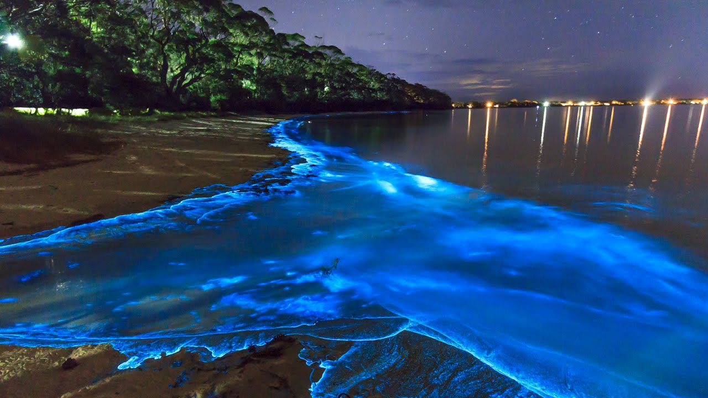

<h2>7. Светящаяся вода на Мальдивах</h2>
Самые удивительные места мира можно найти и в популярных местах отдыха, главное – знать, куда и когда смотреть. Мальдьвы – райское место, но об одной из его граней ты, возможно, ещё не знаешь. На Мальдивах уникальное «звездное небо» появляется прямиком в океане! Происходит это благодаря люминесцирующему планктону, населяющему воды у острова Ваадху. Невероятное место!</br>

</br>
Обычно он начинает светиться в стрессовых ситуациях своей планктонной жизни, к примеру, во время прибоя или ночью. Но учти, что от купания в это время лучше воздержаться, потому как фитопланктон может выделять ядовитые вещества.
</br>
